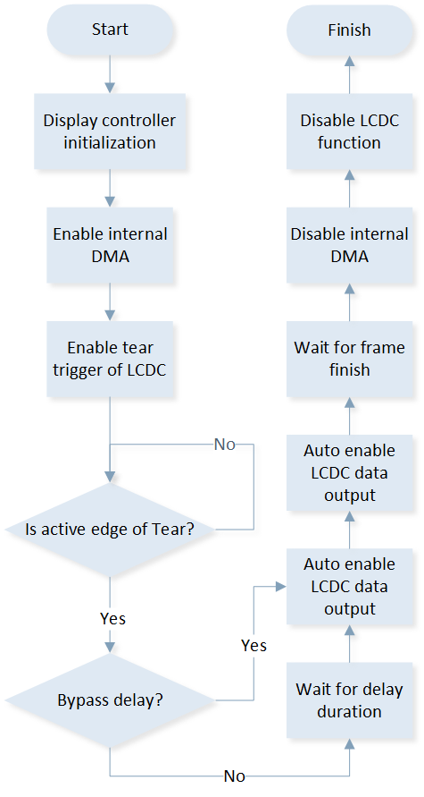
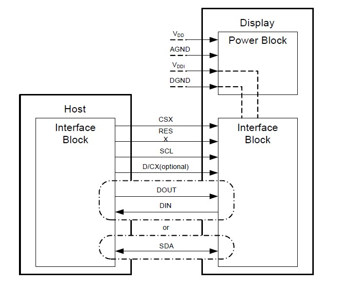
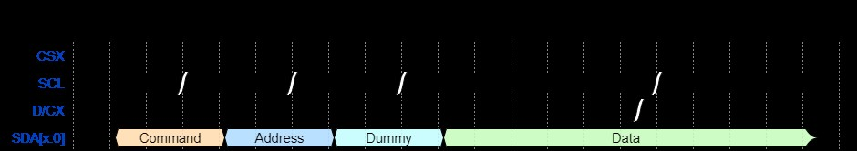
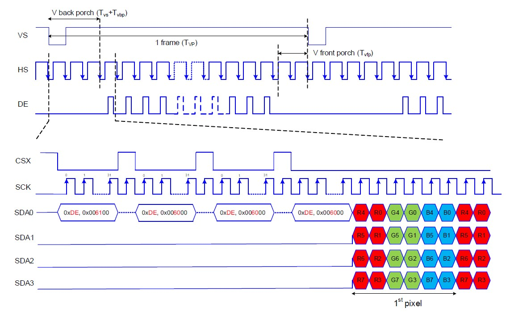
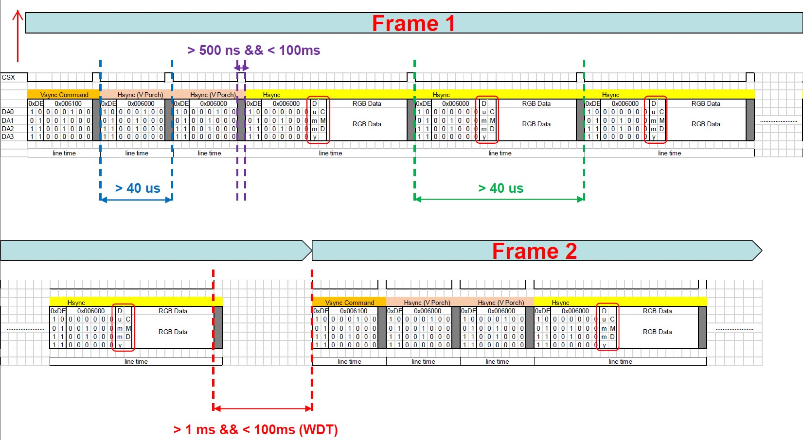
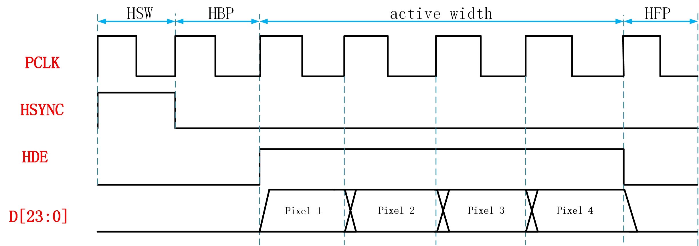

LCDC
Sample List
This chapter introduces the details of the LCDC sample code. The RTL87x2G series provides the following samples for the LCDC peripheral.
Functional Overview
LCDC can provide various display interfaces support for driving LCD panel. It has a built-in RGB converter, which can provide pixel RGB format conversion function. Interfaces including SDI, DBI-B and DPI are supported. An internal DMA is embedded in Display Controller which can accelerate the process of pixel transfer from memory to panel.
Feature List
Internal DMA embedded.
Support SDI interface and ramless SDI panel
Support DBI-B interface.
Support DPI interface.
Internal RGB format converter.
Support byte swap.
Support tear signal
Internal FIFO depth: 128.
Internal FIFO width: 32 bits.
Internal DMA
A simplified DMA is embedded in LCDC which is used to accelerate the transfer process of pixel data from memory to internal FIFO. The internal DMA contains only one channel and LCDC takes the role of flow controller rather than DMA itself.
Source address of DMA can be incremental or fixed according to user requirement, but destination is fixed to the internal FIFO of LCDC.
The internal DMA supports single block mode, multi-block mode and linklist.
Byte Swap
Bytes swap is supported before pixel format converter, which can change the position of bytes.
8-bit Swap

Swap Rule Of 8-bit Swap
16-bit Swap

Swap Rule Of 16-bit Swap
Combination of 8-bit and 16-bit swap

Swap Rule of Combination Of 8-bit And 16-bit Swap
Pixel Format Converter
LCDC supports input pixel format of RGB565, ARGB8888, RGB888, BGR565 and ABGR8888.
LCDC support output pixel format of RGB565, RGB888, BGR565 and BGR888.
Tear Effect
TE signal is supported in LCDC, which can synchronize the data transfer between host processor and LCD panel. Tear signal will be generated by LCD panel in command mode interface, such as DBI-B or SDI. When active edge of tear signal is detected by LCDC, it triggers data output through selected interface.
Work flow of tear effect signal handling is demonstrated in the figure below, The blocks with shadow should be implemented by user manually, while other steps are implemented by LCDC automatically.

Work Flow of TE Signal Handling
DBI-B
DBI-B defines an electrical and logical interface between host processor and display module which adhere to MIPI specifications.
Block diagram of DBI-B interface is shown below:

Block Diagram of DBI-B Interface
CSX signal indicates the write procedure or read procedure is working on. RESX signal is used to reset the display module. TE signal is the frame synchronization signal from display module. D/CX signal indicates whether data or command is transferring in data bus. WRX is the host writing clock signal while RDX is the host reading clock signal. D[7:0] is a data bus of one byte width.
During a write cycle the host processor writes command or data to display module via the interface. Host processor writes D[7:0] on the falling edge of WRX, display module reads D[7:0] on the rising edge of WRX.

DBI-B Write Cycle
During a read cycle the host reads data from the display module via the interface. The display module writes D[7:0] on the falling edge of RDX, host processor reads D[7:0] on the rising edge of RDX.

DBI-B Read Cycle
SDI
SDI interface is based on normal SPI (Serial Peripheral Interface) and extended by bus width and additional control signals.
{kind=link}

Block Diagram of SDI Interface
CSX, RESX and DCX play the same roles as DBI-B interface. SCL is the clock signal for both write cycle and read cycle. Data signal width and direction can be configured in specific register.
Transmit Procedure
There are four phases during transmit procedure, which are command(CMD) phase, address(ADDR) phase, dummy byte phase and data phase. Data length and channel number of each phase can be configured. And the length of these phases shall be an integer multiple of byte.
{kind=link}

Transmit Procedure of SDI
Receive Procedure
There are four phases during receive procedure, which are command(CMD) phase, address(ADDR) phase, dummy phase and receive data phase. The length of CMD, ADDR and data phase shall be an integer multiple of byte. Dummy phase can insert some dummy delay between address phases and receive data phase which is measured in source clock period of SDI interface controller rather than byte.

Receive Procedure of SDI
Transmit Data with Ramless QSPI
Ramless QSPI is designed for LCD module with SDI interface but contains no GRAM in LCD driver IC. This special LCD module works in video mode, VSYNC, VBP and VFP period is replaced by special command packets. HSYNC, VSYNC and DE signals are not needed in the LCD module. The relationship between traditional DPI video mode signals and ramless QSPI interface signals is shown in the figure below:
{kind=link}

Difference between DPI and Ramless QSPI
Example frame procedure of ramless QSPI is demonstrated below:
{kind=link}

Example Frame of Ramless QSPI
DPI
DPI interface defines an electrical and logical interface between host processor and display module which adhere to MIPI specifications.
Block diagram of DPI interface is shown below:

Block Diagram of DPI Interface
VSYNC signal is the vertical synchronization signal sent to display module which shall be inserted in vertical sync lines between each 2 frames. HSYNC signal is the horizontal synchronization signal sent to display module which shall be inserted in horizontal sync period between each 2 lines. DE shall be set valid when actual pixel data is sending to display module. PCLK means pixel clock. D[23:0] is the data bus to send data from host processor to display module. SD and CM are additional control signals which are mainly used for display module of type 4 architecture.

DPI Signals during a Frame Period
Sample Transmission of DPI
The transmit procedure of DPI interface is illustrated as follows with sample parameters.
HSW = 1 |
HBP = 1 |
HFP = 1 |
|---|---|---|
VSW = 3 |
VBP = 2 |
VFP = 1 |
Active width and height are 4 pixels.
The waveform of DPI interface with such parameters is illustrated as below.

DPI Sample Waveform
The detailed waveform in the circle above is illustrated as below.
{kind=link}

DPI Detailed Sample Waveform in Line
Interrupt
LCDC is capable of handling multiple interrupts, which can be addressed either through the CPU's NVIC (Nested Vectored Interrupt Controller) or by polling the interrupt status. An interrupt is triggered when a specific event occurs. Additionally, it is possible to mask or unmask the interrupts, and the interrupt status can also be cleared.
The following interrupts are supported in LCDC peripheral.
Waveform Finish Interrupt
Display Controller waveform finish interrupt would be triggered when whole transfer procedure or read procedure has been finished in selected interface. This interrupt always indicates the end of the interface working procedure.
It should be noted that it would not be triggered when using TE signal to trigger data output.
Tear Trigger Interrupt
Tear trigger interrupt would be triggered when active tear edge has been detected by LCDC.
Transfer Auto Done Interrupt
Transfer auto done interrupt would be triggered when the total size of transfer data configured in register has been transferred to display module.
RX FIFO Overflow Interrupt
RX FIFO overflow interrupt would be triggered when internal FIFO overflows in receive procedure.
TX FIFO Empty Interrupt
TX FIFO empty interrupt would be triggered when internal FIFO has been empty during the transfer procedure.
TX FIFO Overflow Interrupt
It will be triggered when internal FIFO overflows during transfer procedure.
TX FIFO Threshold Interrupt
TX FIFO threshold interrupt would be triggered when water level of internal FIFO is equals to or lower than the threshold during transfer procedure.
Troubleshooting
Hang of LCDC Transmission
Usually LCDC cannot finish the transmission because of insufficient data, causing the data counter doesn't reach the preset data number.
Bus Error in SDI Interface
SDI doesn't allow user to access its register when LCDC is in hardware mode for data transmission. User must switch LCDC to software mode by calling API LCDC_AXIMUXMode() .
See Also
Please refer to the relevant API Reference: